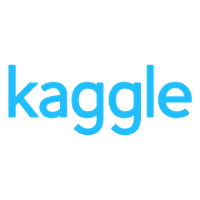
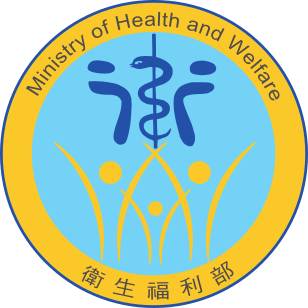
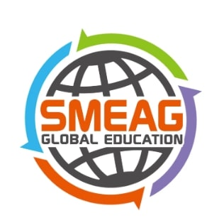
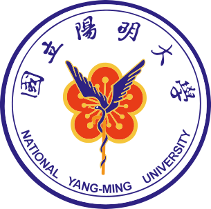
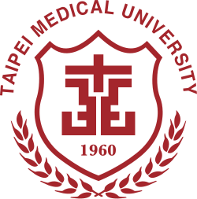

工作經驗 Work Experience
總工作年資： 7 年 4 個月WeHelp Academy
Bootcamp | 後端工程師實習生
Jun 2026– Dec 2026 · 6 mos
經歷 26 週的高強度集訓，完成各階段的實作專案與嚴格檢核，成功具備後端工程師的專業能力。
- 第一階段：Gemini CLI、HTML、CSS、JavaScript、Python、FastAPI、FastMCP、MySQL。
- 第二階段：Git、AI Agent Skills、RESTful API、Amazon Web Service、Payment System。
- 第三階段：React、Next.js、TypeScript、Firebase、AWS Storage、CloudFront、Load Balancer、Docker。

WISEnvr Ltd
軟體研發部 | 正職員工 Full-time
Mar 2023 - Jun 2026 · 3 yrs 4 mos
後端工程師 暨 專案經理
Jul 2025 - Jun 2026 · 1 yr
- 統籌與推動「基隆、淹水、臺南、土壤液化」四大專案計畫的執行與管理進度。
- 自 0 到 1 帶領團隊開發並建置「基隆邊坡資訊平臺」。
- 與尚鼎益公司合作，參與「無毒家園」專案備標與投標作業。
- 利用假日進修，完成 Google Analytics 分析課程並取得個人認證。
- 完成 PMI-ACP 敏捷專案管理師訓練，並參與「READ 互動會議引導術」課程，提升專案引導與溝通能力。
- 重組內部資訊團隊，並成功導入 Scrum 敏捷開發流程，完成團隊轉型。
- 自學全端開發技術（包含基礎前端與各項後端技術），並完成個人網頁。
數據分析師 暨 專案經理
Feb 2024 - Jun 2025 · 1 yr 5 mos
- 參與「淹水、臺南、土壤液化、風機、污水、地層下陷」等六大專案計畫的執行與管理。
- 與鴻宜工程締結合作，推動基隆市政府新計畫案的備標與投標。
- 成功申請進駐台大育成中心，並主導「小型企業人力提升計畫」補助案，順利獲得全額補助。
- 擔任臺南市政府工程管理系統教育訓練之專任講師，並獲得學員高達九成的好評。
- 考取 ISO 27001:2022 資訊安全主導稽核員及碳排淨零管理師等專業證照。
- 持續利用假日進修，完成北醫「基礎程式設計」課程並參與「探索機器學習進階工作坊」。
- 自 2024 年起接任主管職務，帶領資訊團隊達成組織目標。
數據分析師(入門級)
Mar 2023 - Jan 2024 · 11 mos
- 參與「風機、臺南、土壤液化」等三大計畫的專案執行任務。
- 利用假日進修，完成北醫「Python 程式設計與數據分析」及「進階程式語言」等課程。

Kaggle learning courses
線上課程 | 全職進修與轉職
Sep 2022 – Feb 2023 · 6 mos
- 完成數據分析相關之個人專案。
- 透過 Kaggle 自學平台，成功取得 8 張 Kaggle 專業技術證書。

衛生福利部
全民健保爭議審議會 | 助理研究員
Apr 2021– May 2022 · 1 yrs 2 mos
主要負責醫療資訊系統的優化與資料庫建檔，並參與醫事案件的審理與標準化作業流程的建立。
- 推動醫事系統優化，並負責專案資料庫的建置與維護。
- 定期統籌並辦理審查品質策進會議。
- 協助審理全民健康保險之醫療費用爭議案件。
- 建立並標準化醫事案件的分類與派案作業流程。

SMEAG Capital 菲律賓語言學校
托福保證班 | 國際學生
Aug 2019– Nov 2019 · 3 mos
沉浸於全英文語言環境中進修，歷經三個月的高強度訓練與每週托福測驗，模擬考 TOEFL 成績曾獲 100 分以上之佳績。

國立臺灣大學
職業醫學與工業衛生研究所 | 專任研究助理
Sep 2018 – Jan 2021 · 2 yrs
主要職責包括學術文獻回顧、籌辦專家會議、參與國際學術指導、撰寫計畫研究報告，以及建立化學分析方法等。
研究專案 1：建立我國利用風險分析作為化學物質管理決策工具之前期規劃專案工作計畫
The Development of Decision-making Tool for Chemical Management Based on Risk Analysis: A Pilot Study (2020.06-2021.01)
研究專案 2：發展同時定量分析尿液中多種硫醚尿酸類鍵結物作為多種致癌揮發性有機物之暴露指標
Simultaneous Quantitation of Multiple Mercapturic Acid to Serve as Biomarkers of Multiple Carcinogenic Volatile Organic Compounds (2018.09-2019.08)

臺北市政府
環保局環境清潔管理科 | 環保替代役
Jul 2017 – Jul 2018 · 1 yrs 1 mo
專業受訓期間擔任「學員長」領導團隊。分發至北市府後，主要負責紙本與電子公文系統的操作與派發、受理民眾陳情案件及各項臨時交辦事項。此外，於服役期間亦主動參與替代役中心舉辦的英文口說進修班。

國立陽明大學
傳統醫藥研究所 | 專任研究助理
Sep 2016 – Jul 2017 · 11 mos
主要職責涵蓋學術文獻回顧、協助國際論文發表、執行動物實驗，以及建立藥效與藥物動力學的分析方法等。
研究專案 1 ：白花蛇舌草與蕾莎瓦混合服用在大鼠體內的藥代動力學與藥效學研究
Pharmacokinetics and Pharmacodynamics of Oldenlandia diffusa combined with Sorafenib in rats (2016.09-2017.07)
研究專案 2 ：淫羊藿與他達拉非混合服用在大鼠體內的藥代動力學研究
Pharmacokinetics of Herb-drug interaction between Tadalafil and Epimedium sagittatum extract in rats (2016.09-2017.07)
學歷 Education
國立臺灣大學 (最高學歷)
職業醫學與工業衛生研究所 | 碩士畢業
Sep 2014 - Mar 2017
論文專案：2-胺基-3-甲基咪唑[4,5-f]喹啉在大鼠體內藥物動力學之探討
Pharmacokinetics of 2-Amino-3-methyl-imidazo[4,5-f]-quinoline in Rats
- 擔任職衛所「學生代表」，協助處理所內相關事務。
- 執行並完成風險評估計畫，且受邀於美國及韓國之國際學術研討會進行海報發表。
- 就讀期間參與並執行多項毒理學與風險評估相關之研究計畫。

臺北醫學大學
公共衛生學系 | 學士畢業
Sep 2010 - Jun 2014
- 擔任流行病學調查團「團長」，領導團隊執行衛教與專案調查。
- 擔任公衛系羽球社「社長」，參與多場校內外羽球比賽。
- 完成建國補習班私醫聯招密集課程，並參與兩次私醫聯招轉系考，展現高度的學習毅力與自我期待。
專業技能 Skills & Expertise
軟體開發
- Python後端開發 (FastAPI & ETL)
- 資料庫ORM (SQLModel & SQLAlchemy)
- 資料庫架構設計 (MySQL & PostgreSQL)
- 容器化部署 (Docker & Docker-Compose)
- 基礎前端 (HTML、CSS、JS)
- UI/UX前端介面設計與使用者流程設計
- 版本控制 (GitHub & Gitlab)
數據分析
- 資料清理及數據處理 (Pandas & NumPy)
- 資料視覺化 (matplotlib & plotly)
- 機器學習應用 (scikit-learn)
專案管理
- Scrum / Agile 敏捷開發流程
- Git 版本控制與團隊協作